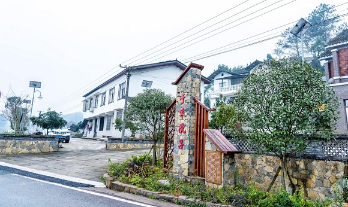

大观镇
大观镇，隶属于重庆市南川区，地处南川区北部，东与木凉乡接壤，
南与兴隆镇相邻，西与巴南区花石乡为邻，北与黎香湖镇和白沙镇毗邻，
距南川区人民政府驻地16千米， 区域总面积66.42平方千米。 [2]
清宣统二年（1910年），大观镇一带建有观桥乡；1985年2月，
由大观乡改为大观镇。 截至2018年末，大观镇户籍人口为27573人
截至2020年6月，大观镇下辖1个社区、7个行政村
镇人民政府驻观音桥。
2018年，大观镇有工业企业52个，其中规模以上5个，
有营业面积超过50平方米以上的综合商店或超市32个

农业
2011年，大观镇农业总产值达到2.32亿元，比2010年增长6.1%，农业增加值1.6亿元，比2010年增长10.2%，占生产总值的26.3%。大观镇粮食作物以水稻、小麦、玉米为主。2011年，大观镇生产粮食4.1万吨，人均1.5吨，其中水稻3.8万吨，小麦580吨，玉米1218吨。大观镇主要经济作物为蔬菜。2011年，大观镇蔬菜种植面积1.4万亩，产量4万吨。大观镇畜牧业以饲养生猪、羊、家禽为主。2011年，大观镇生猪饲养量7.1万头，年末存栏4.2万头；羊饲养量1488只，年末存栏480只；牛饲养量1700头，年末存栏560头；家禽年饲养量57万羽。2011年，大观镇生产肉类3148.16吨；畜牧业总产值5885万元。2011年，大观镇水果种植面积2000亩，产量1200吨，主要品种有蓝莓、葡萄、猕猴桃、梨。大观镇渔业以淡水养殖为主。2011年，大观镇渔业总产值510万元。 [1]
教育业
2011年末，大观镇有幼儿园5所，在园幼儿1023人，专任教师26人；小学2所，在校生1405人，专任教师94人，小学适龄儿童入学率100%；初中1所，在校生3876人，专任教师254人；初中适龄人口入学率、小升初升学率、九年义务教育覆盖率均达100%。2011年，大观镇财政预算内教育经费3600万元，比2010年增长29%；预算内教育经费（包括城市教育费附加）占财政总支出的比例为34%，比2010年增长11%
医疗卫生
2011年末，大观镇有各级各类医疗卫生机构2个；病床100张，固定资产总值318万元；专业卫生人员70人。2011年，大观镇医疗机构（门诊部以上）完成诊疗1.5万人次。2011年，大观镇法定报告传染病发病率为3.2/10万，农村安全饮用水普及率95%，农村卫生厕所普及率83%，新型农村合作医疗参合率97%。
社会保障
2011年，大观镇城镇最低生活保障户数为186户，人数293人，支出56.0万元，月人均170元；医疗救助398人次；民政部门资助参加合作医疗1728人次，共支出8.8万元农村最低生活保障户数734户，人数1181人，支出127.4万元，月人均90元；农村五保集中供养19人，支出6万元，比2010年增长1%；农村五保分散供养114人，支出25.08万元，比2010年增长5%；农村医疗救助1022人次，民政部门资助参加合作医疗1728人次，共支出8.8万元，比2010年增长19.8%；农村临时救济188人次，支出8万元，比2010年增长2.6%；国家抚恤、补助各类优抚对象325人，抚恤事业费支出72.9万元；有敬老院1家，床位20张，收养农村院内五保人员14人，农村院外五保112人，支出31.3万元；参加新型农村养老保险1.4万人，参保率82%。